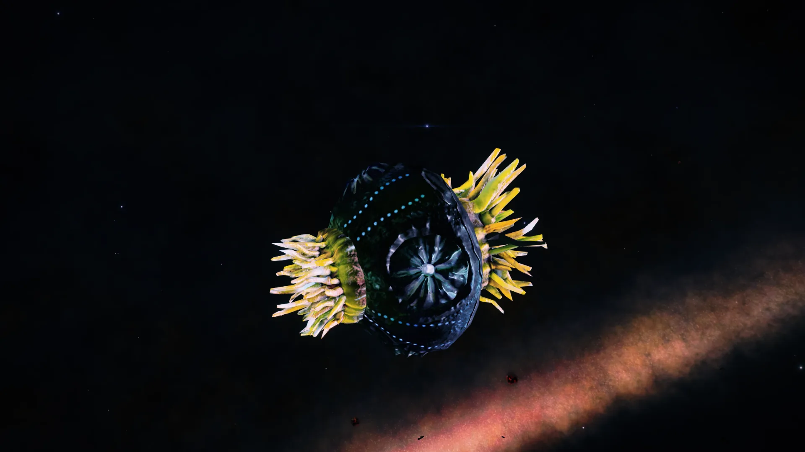

Congratulations to commander ThePredeitor of Nebula Discoveries LLC who has discovered an new variety of torus mollusc in the Vulcan Gate region.
The new molluscs were found in Ovomly YE-H d10-3 a system with a single white dwarf DBV star, and there were a total of 2 NSP sites, both containing the new type of Torus Mollusc.
The traits are the same as every torus mollusc. :Retreats if approached, and retreats if attacked
